FirebugAI thinking...
note listDevTools。
What is Firebug?
FirebugIt is an open-source web development tool.
In this chapter of the tutorial, we will discuss the following:
- How to install Firebug.
- The note must be an extension of this article's content!
- For article submission, click here
- How to obtain the registration invitation code
- Before sharing notes, you must
- Log in
- Cancel
Share note
Nickname
Use the Firefox browser to visit the above download address. After the page opens, click the download button, and a pop-up window will appear prompting for the installation directory. After installation, restart your Firefox browser.
After restarting, you can see the Firebug icon in the Firefox browser. Click the Firebug icon (located in the upper right corner of the Firefox browser) to activate the Firebug plugin.
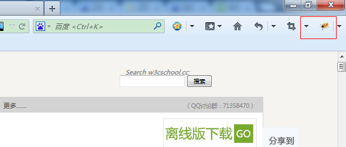
Nickname (required)
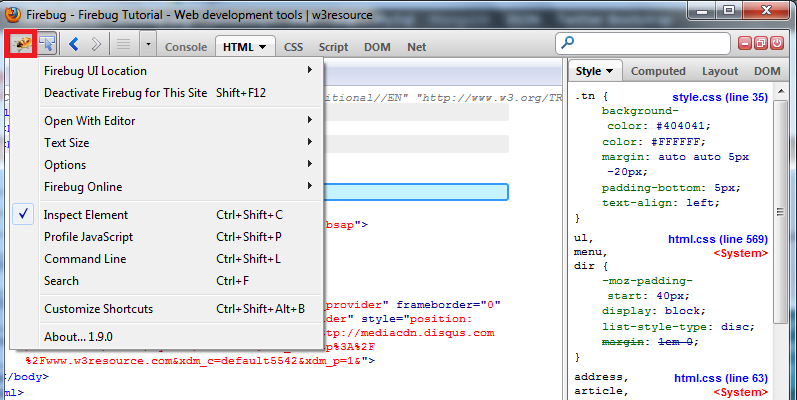
Click Inspect Element on the page.
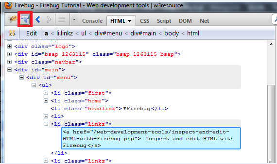
Email (required)
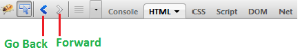
Reference address
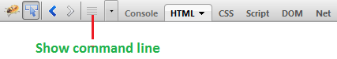
right sidebar
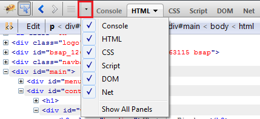
feedback dialog start
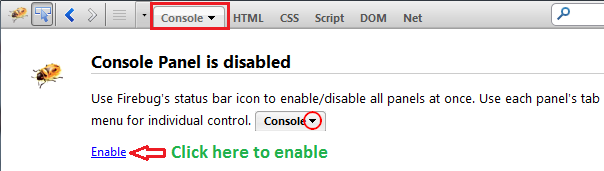
Firebug Tutorial | Example
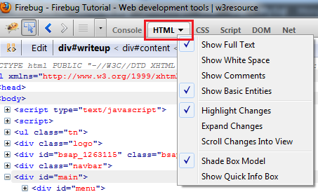
Use Firebug to view and edit HTML and CSS
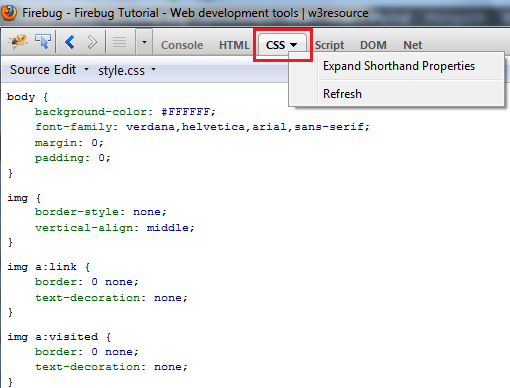
Firebug's official website announced that it has ceased development and maintenance of Firebug, inviting everyone to use Firefox's built-in tools
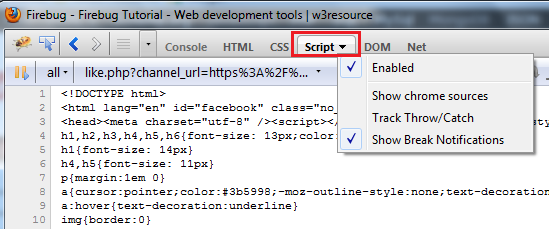
Use Firebug to inspect and edit HTML.
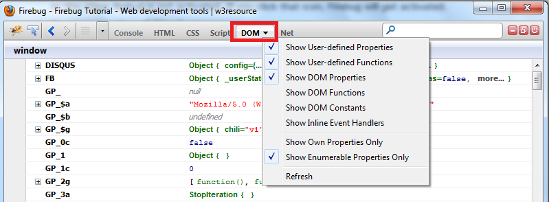
Network panel (for webpage speed testing and optimization)
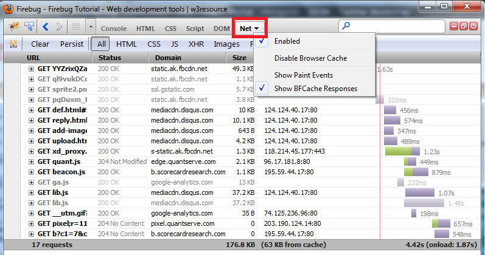
Use Firebug to inspect and edit CSS.
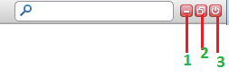
- Use Firebug to debug JavaScript.
- 2 - Install Firebug in the browser window.
- Dynamically execute JavaScript in Firebug.